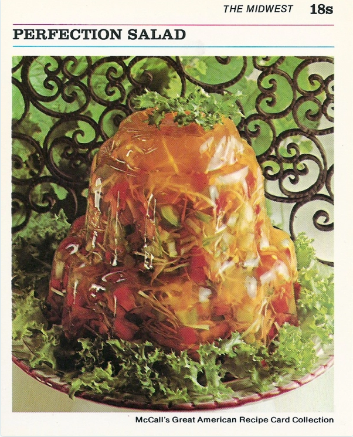

One of the best American recipe
Who doesn't love a good salad in gelatine guys ? I sure do
This meal takes needs a lot of time to cook, make sure you have at least a full ay ahead of you
Ingredients
- 2 envelopes unflavored gelatine
- 1/2 cup sugar
- 1 teaspoon salt
- 1 can (12 ml) apple juice
- 2 tablespoons vinegar
- 1 cup shredded carrot
- 1 cup sliced celery
- 1 cup finely shredded cabbage
- 1/2 cup chopped green pepper
- 1 can (4 oz) chopped pimiento
Steps:
- In small saucepan, combine gelatine, sugar, and salt; mix well.
- Add 1 cup water. Heat over low heat, stirring constantly, until sugar and gelatine are dissolved. Remove from heat.
- Stir in apple juicy, cabbage, green pepper, and pimiento; stir until well combined.
- Turn into decorative, 1 1/2-quart mold. Refrigerate 4 hours,or until firm.
- To unmold: Run small spatula around edge of mold; invert onto serving plate. Place hot dishcloth over mold; shake gently to release. Repeat, if necessary. Lift off mold. refrigerate until ready to serve.
- Enjoy your healthy jelly salad
make 8 servings
Return to homepage
Return to top